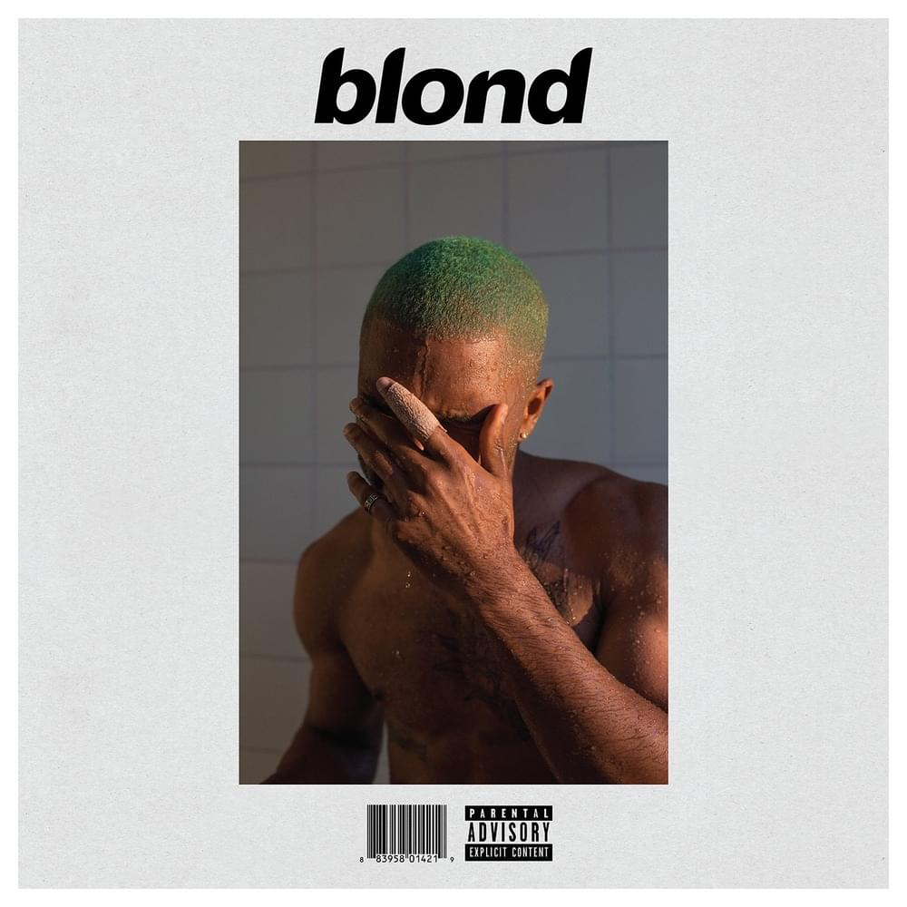
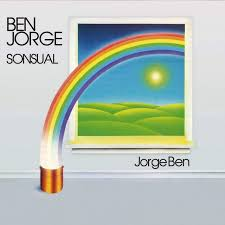

Seigfried
Uma das melhores músicas do melhor álbum do cantor Frank Ocean. Ela é uma música que expressa sentimentos muito melancólico, como falta de identidade, uma saudade de uma paixão, entre outro. Não é apenas uma música, mas sim um sentimento, ainda mais em seu refrão, que te leva ao plano astral. #VoltaFrank

Me chamando de paixão
Música de Jorge Ben Jor que conta sobre uma paixão que foi perdida, e aparentemente sem volta. O cantor retrata uma dor de saudades em relação a sua amada, porém, em seu refrão ele diz que não se sente tão triste, afinal foi grato de todos momentos que ficaram um ao lado do outro


ARE WE STILL FRIENDS?
A música ARE WE STILL FRIENDS?, de Tyler, The Creator, fala sobre o medo de perder alguém importante e o desejo de manter uma conexão, mesmo depois de um relacionamento difícil. Ela expressa saudade, vulnerabilidade e a esperança de que, apesar de tudo, ainda exista uma amizade.